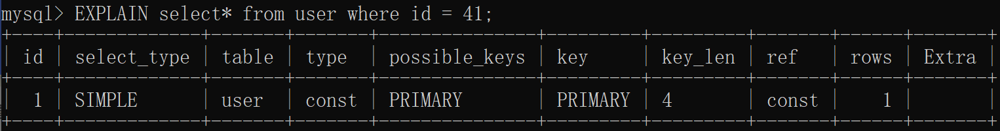
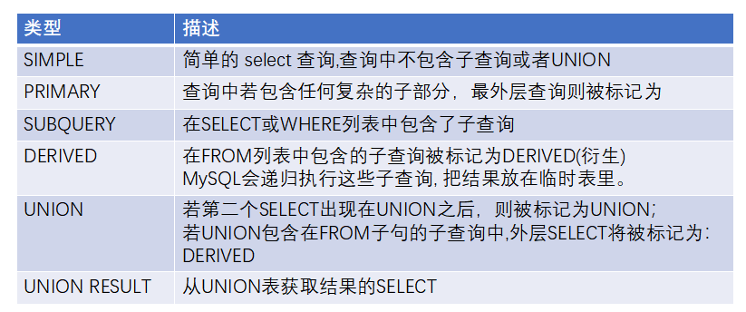
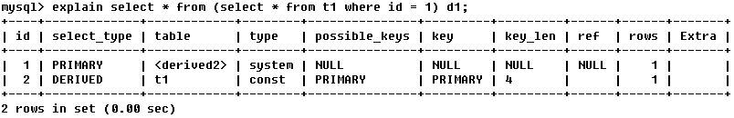
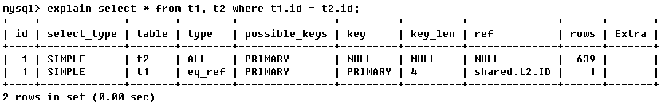
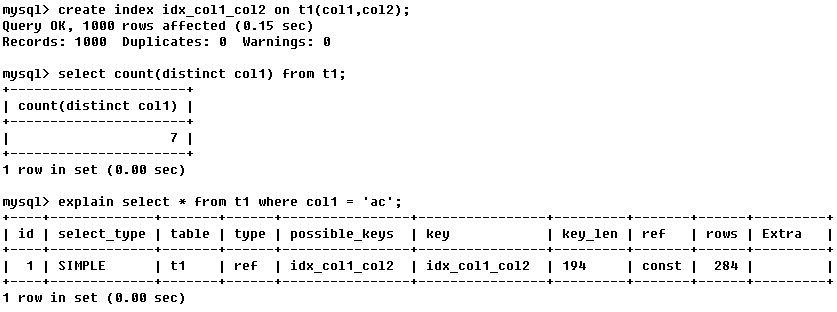
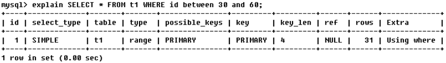
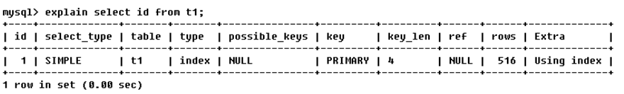
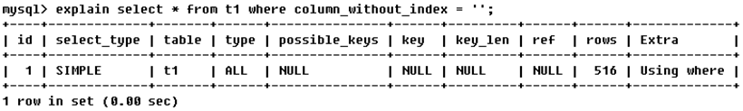
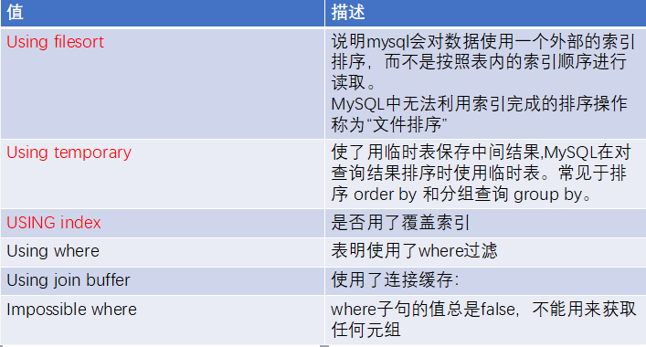

执行计划，简单的来说，是SQL在数据库中执行时的表现情况,通常用于SQL性能分析,优化等场景。
当我们的系统上线后数据库的记录不断增加，之前写的一些SQL语句或者一些ORM操作效率变得非常低。我们不得不考虑SQL优化。
SQL优化大概是这样一个流程：
1.定位执行效率低的SQL语句（定位）；
2.分析为什么这段SQL执行的效率比较低（分析）；
3.最后根据第二步分析的结构采取优化措施（解决）。
而EXPLAIN命令的作用就是帮助我们分析SQL的执行情况，属于第二步。说的规范一点就是:EXPLAIN命令是查看查询优化器如何决定执行查询的主要的方法。学会解释EXPLAIN将帮助我们了解SQL优化器是如何工作的。执行计划可以告诉我们SQL如何使用索引，连接查询的执行顺序，查询的数据行数。
要使用EXPLAIN,只需要在查询的SELECT关键字之前增加EXPLAIN这个词。
下面是一个简单EXPLAIN的结果：

是一位数字，表示执行SELECT语句的顺序。id值相同执行顺序从上到下。id值不同时id值大的先执行。
这一列要是用于区别:普通查询、联合查询、子查询等的复杂查询。取值如下:

显示这一行的数据是关于哪张表的
type显示的是访问类型，是较为重要的一个指标，结果值从最好到最坏依次是：
system > const > eq_ref > ref >
fulltext > ref_or_null > index_merge > unique_subquery >
index_subquery > range > index > ALL 需要记忆的
system>const>eq_ref>ref>range>index>ALL
一般来说，得保证查询至少达到range级别，最好能达到ref。
System与const
System：表只有一行记录（等于系统表），这是const类型的特列，平时不会出现，这个也可以忽略不计
Const：表示通过索引一次就找到了
const用于比较primary key或者unique索引。因为只匹配一行数据，所以很快。
如将主键置于where列表中，MySQL就能将该查询转换为一个常量

eq_ref
唯一性索引扫描，对于每个索引键，表中只有一条记录与之匹配。常见于主键或唯一索引扫描

ref
非唯一性索引扫描，返回匹配某个单独值的所有行.
本质上也是一种索引访问，它返回所有匹配某个单独值的行，然而，它可能会找到多个符合条件的行，所以他应该属于查找和扫描的混合体

range
只检索给定范围的行,使用一个索引来选择行。key 列显示使用了哪个索引
一般就是在你的where语句中出现了between、<、>、in等的查询
这种范围扫描索引扫描比全表扫描要好，因为它只需要开始于索引的某一点，而结束语另一点，不用扫描全部索引。

index
当查询的结果全为索引列的时候，虽然也是全部扫描，但是只查询的索引库，而没有去查询数据。

all
将搜索全表以找到匹配的行

possible_keys:可能使用的key
Key:实际使用的索引。如果为NULL，则没有使用索引
查询中若使用了覆盖索引，则该索引和查询的select字段重叠
表示索引字段的最大可能长度，KEY_LEN的长度由字段定义计算而来，并非数据的实际长度。
根据这个值，就可以判断索引的使用情况，特别是在组合索引的时候，判断所有的索引字段是否都被查询用得到。
关于key_len列：
显示索引的哪一列被使用了，如果可能的话，是一个常数。哪些列或常量被用于查找索引列上的值。
根据表统计信息及索引选用情况，大致估算出找到所需的记录所需要读取的行数。
包含不适合在其他列中显示但十分重要的额外信息。
